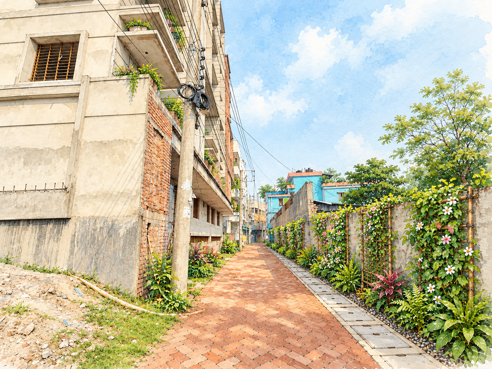

AI Green
Advisor.
Take or upload a photo of your street or house. AI will analyze it and suggest vertical gardens, tree corridors, waste bins, and a colorful green concept.
01 Photo
02 Green Plans
Capture or upload your photo
Take a clear photo with your camera or select from your gallery. JPG, PNG or WebP up to 10 MB.
or drag and drop an image here
⚙️ Advanced: Use Custom Gemini API Key (optional)
The website already includes a built-in free API key. If you have your own personal key from Google AI Studio, you can paste it below:
Green Intervention Suggestions
Analyzing your photo and generating green plans…
Your Photo
AI Suggestions
🎨 Visual Transformation — Before & After
Drag the slider to see how your exact street or building transforms with green interventions.
Rendering green transformation visual…

Illustrated Watercolor Renewal Concept for a Khulna Neighborhood Lane